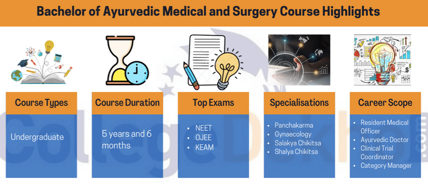
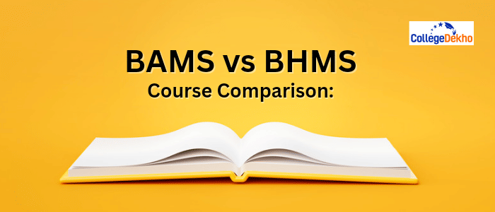
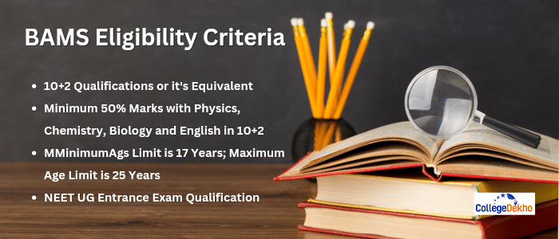

- We’re on your favourite socials!


BAMS Course: Full Form, Admission, Eligibility, Syllabus, Top Colleges
 Save
Save Request a callback
Request a callback Ask us
Ask us
The full form of BAMS is Bachelor of Ayurveda Medicine and Surgery. It is a 5-year UG medical course which focuses on training students in the different usage of chemicals present in nature for curing several diseases. The course curriculum of BAMS is defined in detail in the BAMS syllabus. Important topics under the BAMS syllabus include Ayurveda Nirupana, Dravya, Pratyaksha Pariksha, etc. Admission to BAMS course is conducted through NEET UG entrance exam only.
BAMS Course Overview
What is the full form of BAMS? BAMS Full Form stands for Bachelor of Ayurvedic Medicine and Surgery, which is a popular 5-year medical course that trains students in the different usage of chemicals present in nature for curing several diseases. Bachelor of Ayurveda Medical & Surgery or BAMS Course is a UG degree program that offers an integrated course and covers a wide range of subjects of traditional Ayurveda and modern medical systems. BAMS Course Admission is conducted for candidates who have completed their higher secondary education in the science stream with the following mandatory subjects: Physics, Chemistry, Biology/Mathematics. In this course, students learn about different topics of Ayurveda, medical practices, and more. Interested candidates may check out the BAMS Syllabus and Subjects to gain a clearer perspective on the course curriculum. This is a regular degree offered in offline mode and therefore, all aspirants are required to study in classrooms as there is no distance learning option available.
BAMS is a 5-year-6-month bachelor’s program, including a one-year mandatory internship. After completing the BAMS degree, candidates gain expertise in the field of Ayurveda and Ayurvedic medicine. Renowned colleges such as Banaras Hindu University, Dr. DY Patil Vidyapeeth, Pune, Bharati Vidyapeeth Deemed University, IMS Varanasi, RK University, etc. grant BAMS degree admission. The course fee ranges from INR 25,000 to INR 3.5 LPA. Once graduated, there are several BAMS Job Opportunities available for candidates who have an in-depth knowledge of the field. Plenty of Government Jobs After BAMS are also available for the aspirants. Thus, candidates can explore careers as Business Development Officers, Category Managers, Ayurvedic doctors, Resident Medical Officers, Medical Representatives, Jr. Clinical Trial Coordinators, and many more, with the scope of higher BAMS Salary packages offered to them.
Table of Contents
- BAMS Course Overview
- BAMS Course Highlights
- Why Choose BAMS Course?
- BAMS Vs BHMS Course Comparison
- BAMS vs MBBS Course Comparison
- BAMS vs BDS Course Comparison
- BAMS Eligibility Criteria
- BAMS Entrance Examination
- Specializations Under Bachelor of Ayurvedic Medicine and Surgery
- BAMS Admission Process
- B.A.M.S. Course Fee
- BAMS Syllabus
- Top Colleges in India Offering Bachelor of Ayurvedic Medicine and Surgery (State and City-Wise)
- Top BAMS Colleges in India Offering Direct Admission
- Top BAMS Government Colleges in India
- Top BAMS Private Colleges in India
- Popular Foreign College Offering Bachelor of Ayurvedic Medicine and Surgery
- BAMS Job Prospects
- Bridge Course after BAMS
- FAQs about BAMS
BAMS Course Highlights

Check out the major highlights of BAMS as mentioned below:
| Level | Undergraduate |
|---|---|
| Duration | 5 Years |
| Minimum Academic Requirement | Class 12 (Science Stream) |
| Subject Requirement | Physics, Chemistry and Biology |
| Minimum Aggregate Score Requirement | 50% or Above |
| Exam Type | Annual |
| Admission/ Selection Process | Entrance Exam Based |
| Exams Accepted | NEET, OJEE, KEAM, etc. |
| Average Course Fee | INR 25,000 - INR 3 LPA |
| Average Initial Salary | INR 3 LPA - INR 15 LPA |
| Job Roles |
|
| Areas of Employment | Govt/Pvt Hospitals, Nursing Homes, Ayurvedic Clinics, Own Business, Wellness Centres, etc |
Why Choose BAMS Course?
The practice of Ayurvedic Medicine has been prevalent in India since the Vedic period. Although many original texts depicting the practice of Ayurvedic treatment have been lost over the years, the positive impacts and benefits of Ayurveda are still intact and prevalent in today's times. Ayurvedic Medicine has now been recognised all over the world as an important part of medicinal studies. The World Health Organisation has recently taken up several initiatives to spread awareness of Ayurvedic medical practices.
One of the primary highlights of BAMS is that the syllabus for the same includes a vast of topics to be covered such as the study of Kriya Sharira, Rachana Sharira, Dravyuaguna, Yoga, Shalya Tantra, Roga Nidana and Vikriti Vijnana, Shalakya Tantra etc. The course details of the same also includes human anatomy, physiology, pathology & diagnostic procedures, principles of medicine, toxicology, forensic medicine, pharmacology, E.N.T, gynaecology & obstetrics, ophthalmology and principles of surgery from modern medicine.
Advantages of Studying BAMS Course:
- BAMS is accepted and encouraged worldwide. All doctors and scientists are perpetually interested in finding alternative and traditional medicines for curing diseases. Since it is considered one of the ancient and traditional ways of treating severe as well as minor ailments, there is no doubt that this field has immense potential and variety of career prospects.
- All candidates have the option to do a bridge course after the completion of BAMS degree programme, to practice allopathy medicine. Additionally, BAMS students are generally considered equivalent to MBBS graduates.
- Interestingly, various health centers have been set up by various state governments as well, for the Ayurvedic practices all over India. Various MD and MS courses after BAMS are available nowadays for a better understanding of the subjects.
Who Can Enroll into BAMS Course?
All candidates who are interested in the integrated study of Medical Science and Traditional Ayurveda, should pursue a BAMS degree to have an insightful understanding of the subjects and to grow in the field. All candidates wishing to pursue BAMS should have completed their Higher Secondary with Physics, Chemistry and Biology from a recognized board. Also, candidates who are interested in finding alternative methods for the treatment of diseases are also advised to enroll themselves into BAMS to satisfy their desired career prospects.
BAMS Vs BHMS Course Comparison

Students are often found confused about whether to opt for the BAMS or pursue BHMS course. The study structure is a bit similar - making students wonder which option will be best for their career. Here’s a brief comparison of BAMS VS BHMS for candidates’ reference:
| Parameters | BHMS (Bachelor of Homeopathic Medicine and Surgery) | BAMS (Bachelor of Ayurvedic Medicine and Surgery) |
|---|---|---|
| Course Duration (in years) | 5.5 | 5.5 |
| Subject of Study | Homeopathy Medicine and Surgery | Ashtanga Ayurveda |
| Average Course Fees | INR 30,000 to 1 LPA | INR 25,000 to 3.5 LPA |
| Entrance Exam | NEET | NEET |
| Eligibility | Class 12 with PCB and a minimum of 50% marks | Class 12 with PCB and a minimum of 50% marks |
| No. of colleges | 225 | 419 |
| No. of seats | 23,250 | 29,470 |
| Placement Package | 3.5 Lakhs | 4.0 Lakhs |
| Career Prospects | Therapists, Specialists, Public Health Specialists, and Pharmacists. | Specialists, Clinical Trial Coordinators, Therapists, and Pharmacists. |
BAMS vs MBBS Course Comparison
The course comparison of BAMS and MBBS degree courses is given below
| Parameters | BAMS | MBBS |
|---|---|---|
| Full form | Bachelor of Ayurvedic Medicine and Surgery | Bachelor of Medicine Bachelor of Surgery |
| Entrance Exams | IPU CET, KEAM, BVP CET, NEET UG | NEET UG |
| Admission Process | Entrance Exam | Entrance Exam |
| College | IMS, Bharati University Deemed University, Yenepoya University, | AIIMS, Kolkata Medical College, Grant Medical College |
BAMS vs BDS Course Comparison
Mentioned below is a detailed explanation of the two courses, BDS and BAMS, for students to get a clear idea of which one is best suited for their goals:
| Particulars | BAMS | BDS |
|---|---|---|
| Full Form | Bachelor of Ayurvedic Medicine & Surgery | Bachelor of Dental Surgery |
| Course Duration | 5.6 Years | 4 years+1 Year of Internship |
| Eligibility Criteria | 50% in Higher Secondary with compulsory subjects: Physics, Chemistry, and Biology | 50% in Higher Secondary with compulsory subjects: Physics, Chemistry, and Biology |
| Admission Process | Entrance Examination | Entrance Examination |
| Course Fee | Minimum INR 2 LPA - INR 5 LPA | Minimum INR 3 LPA - INR 6 LPA |
| Job Profiles | Lecturer, Pharmacist, Teacher, Therapist, Sales Representative, Scientist, Ayurvedic Doctor, Panchakarma Practitioner, etc. | Dental Research Scientist, Dentist, Lecturer, etc. |
| Average Salary | INR 3 LPA - INR 6 LPA | INR 3 LPA - INR 10 LPA |
| Top Recruiters | Health Care, Baidyanath and Himalaya firms, Kasturba Medical College Dabur, University of Madras, Ayurveda, Manipal, etc. | Hospitals, Dental Clinics, Educational Institutes, etc. |
BAMS Eligibility Criteria

The minimum qualifying eligibility criteria for the BAMS are as follows:
- Educational Qualification: Candidates must have passed 10+2 or equivalent examinations with Physics, Chemistry, Biology, and English as the main subjects. They must have obtained a minimum of 50% marks in the aggregate of these subjects.
- Age Limit: The minimum age limit for BAMS admission is 17 years and the maximum age limit is 25 years as of the date of admission.
- National Eligibility cum Entrance Test: Candidates must have cleared the NEET exam and obtained the minimum required marks to be eligible for BAMS Admission.
- Minimum Percentage: Candidates must have obtained a minimum of 50% marks in their qualifying examination to be eligible for admission to the BAMS.
- Physical Fitness: Candidates must be physically fit and free from any kind of disability that may affect their performance during the course.
- Domicile Requirements: Candidates must satisfy the domicile requirements as specified by the concerned authorities.
It is important to note that the eligibility criteria may vary slightly depending on the university or institute offering the BAMS, and candidates are advised to check the specific criteria before applying. Meeting the eligibility criteria does not guarantee admission, as the admission process may also include an entrance exam, personal interview, and merit-based selection.
Skills Required for BAMS
The Bachelor of Ayurvedic Medicine and Surgery (BAMS) course requires students to have certain skills to succeed in the program and in their future careers as Ayurvedic practitioners. Some of the key skills required for BAMS are:
| Skills | Description |
|---|---|
| Scientific knowledge | BAMS is a science-based course, and students are required to have a strong understanding of anatomy, physiology, pharmacology, and other related subjects. |
| Communication skills | As a practitioner, clear and effective communication is important in building trust with patients and conveying information accurately. |
| Critical thinking | Students must have the ability to analyze symptoms, diagnose illnesses, and make informed decisions based on their knowledge and observations. |
| Empathy | Ayurveda is based on the principles of holistic healing, and practitioners need to be able to connect with their patients and understand their concerns. |
| Organizational skills | BAMS students must be able to manage their time effectively, prioritize tasks, and stay organized, as the course requires a significant amount of independent study. |
| Attention to detail | Ayurvedic practitioners must be meticulous in their observations, diagnoses, and treatments, and pay close attention to detail in their work. |
| Physical stamina | Practicing Ayurveda may involve long hours, physically demanding treatments, and working with patients who may require assistance. |
By developing these skills, BAMS students can better prepare themselves for the demands of the course and their future careers.
BAMS Entrance Examination
- NEET-UG (National Eligibility-cum-Entrance Test for Undergraduate Programme) is a pan-India entrance examination held for BAMS admissions.
- The National Testing Agency (NTA) conducts the entrance every year.
- The NEET-UG exam contains two sections: Section A comprising 35 questions and Section B with 15 questions.
- All the questions are multiple-choice based.
- The exam duration is a total of 3 hours and 20 minutes.
- The counselling for the same is centralized.
- Other entrance examinations for BAMS admission are IPU CET, KEAM, BVP CET, etc.
BAMS Cutoff
NEET 2023 Cutoff for BAMS is 720-137 for general category students and 136-107 for reserved category aspirants. The cutoff percentile for general category aspirants is 50th and for reserved category students is 40th.
Specializations Under Bachelor of Ayurvedic Medicine and Surgery
There are many specialization courses that students can choose from after or during the Bachelor of Ayurveda Medical and Surgery course. Some of the popular choices of students for specialization in ayurvedic studies are
| Specialization | Details |
|---|---|
| Rasa Shastra | This course discusses in detail how to store medicines and keep the quality of medical equipment intact. |
| Swasthavrittra | Discusses how to maintain a healthy lifestyle - diet, food, sleep, and exercise. |
| Kayachikitsa | This specialization enables students to handle any kind of emergency medical situation, manage disorders and diagnose diseases. |
| Shallya Tantra | Students learn about anesthesia procedures, sterilizations, and surgical systems. |
| Agad Tantra | Comprises in-depth topics covering the laws relating to poisons, chemicals, acids, etc. |
BAMS Admission Process
Admission in the BAMS typically involves the following steps:
- Eligibility criteria: The first step is to check if the candidate meets the eligibility criteria for BAMS. This usually includes having completed Higher Education with Physics, Chemistry, and Biology as main subjects and a minimum of 50% marks in aggregate.
- Entrance exam: Most BAMS colleges accept NEET scores for admission to their program. Some institute may conduct their college-specific exam; the format and content of these exams may vary, but they typically test the candidate's knowledge of Physics, Chemistry, Biology, and General Knowledge.
- Application Fee: The fee for the NEET exam for general category applicants is INR 1,500, while it is INR 800 for those belonging to the SC/ST categories.
- Merit list: Based on the scores obtained in the NEET exam, a merit list is prepared, and candidates are selected for admission based on their rank in the list.
- Counseling: After the NEET exam, a centralized counseling process is conducted for the admission of students who have qualified for NEET, into various medical science courses, based on their performance in the NEET UG entrance exam.
- Document verification: Candidates who are selected for admission are required to submit their original documents for verification.
- Fees payment: Finally, candidates are required to pay their tuition fees and other charges to complete the admission process.
B.A.M.S. Course Fee
The average B.A.M.S. course fee lies within the range of INR 25,000 to INR 3 LPA. Course fees of some colleges are given below
| College/University | Average Fee |
|---|---|
| Rajiv Gandhi Memorial Ayurvedic College & Hospital | INR 70,000 |
| Bharati Vidyapeeth College of Ayurveda | INR 2.8 LPA |
| Dr DY Patil Vidyapeeth | INR 4 LPA |
| Indian Institute of Ayurvedic Medicine and Research | INR 1.5 LPA |
| GGSIPU | INR 2.5 LPA |
BAMS Syllabus
The entire coursework of Bachelor of Ayurvedic Medical and Surgery is spread across 5 years, with a 1-year internship at the end. The evaluation is done in semester mode and each year, 2 sessions are held in June/July and November/December. The year-wise syllabus for BAMS is given below for your convenience.
| 1st Year | 2nd Year | 3rd Year | 4th Year |
|---|---|---|---|
| Rachana Sharir | Dravyaguna Vigyan | Agadtantra | Kayachikitsa |
| Padartha Vigyan And Ayurved Itihas | Diseases of Rasa Vaha Srotas | Prasuti Tantra Evum Stri Roga | Panchkarma |
| Sanskrit | Charak Samhita | Swasthavritta | Shalya Tantra |
| Maulik Siddhant Avum Ashtang Hridaya | Rasashastra | Charak Samhita (Uttarardha) | Research Methodology And Medical Statistics |
| Kriya Sharir | Roga Nidan | Kaumarbhritya Parichaya | Shalakya Tantra |
Best Books for BAMS
There are several books published for BAMS aspirants to guide them to follow the course curriculum. Some of the suggested reads by thd course toppers are mentioned below in the table:
| Book | Author |
|---|---|
| Padartha Vigyan | Ravi Dutta Tripathi |
| Indian Medicine in the Classical Age | P.V. Sharma |
| Ayurvediya Kriya Sharir | Ranjit Rai Desai |
| Ayurvedic Human Anatomy | Prof. Dr. Giridhar M. Kanthi |
| Ayurvediya Rasashastra | Chandrabhushan Jha |
| History of Indian Medicine (1-3 parts) | Dr. Girindra Nath Mukhopadhyaya |
| Bedi Vanaspati Kosha | Ramesh Bedi |
| Sanskrit Ayurveda Sudha | Dr. B. L. Gaur |
Top Colleges in India Offering Bachelor of Ayurvedic Medicine and Surgery (State and City-Wise)
The state and city-wise distribution of B.A.M.S. colleges in India are mentioned below for your reference
Punjab
Popular B.A.M.S. colleges in Punjab are listed below
| College/University | City |
|---|---|
| Guru Nanak Ayurvedic Medical College and Research Institute | Ludhiana |
| Babe Ke Ayurvedic Medical College | Moga |
| Dayanand Ayurvedic College | Jalandhar |
| Baba Farid University of Health Sciences | Faridkot |
Delhi NCR
Popular B.A.M.S. colleges in Delhi NCR are mentioned below
| College/University | City |
|---|---|
| Guru Gobind Singh Indraprastha University | New Delhi |
| IIMT University | Meerut |
| Ayurvedic and Unani Tibbia College | New Delhi |
| Ch. Brahm Prakash Ayurved Chakra Sansthan | New Delhi |
Uttar Pradesh
Top B.A.M.S. colleges in Uttar Pradesh are
| College/University | City |
|---|---|
| Institute of Medical Sciences | Varanasi |
| Mangalayatan University | Aligarh |
| Chhatrapati Shahuji Maharaj University | Kanpur |
| Sanskriti University | Mathura |
| Rama University | Kanpur |
| IMS BHU | Lucknow |
| IIMT University | Lucknow |
| CSJMU | Lucknow |
| AUAMC Aligarh - Aligarh Unani PG and Ayurvedic Medical College | Lucknow |
| Shri Dhanwantri Ayurvedic Medical College | Lucknow |
Karnataka
Colleges in Karnataka offering B.A.M.S. degree are
| College/University | City |
|---|---|
| KLE University | Belgaum |
| Hillside Academy | Bangalore |
| Goutham College | Bangalore |
| AVS Ayurvedic Mahavidyalaya | Bijapur |
| Acharya Deshabhushan Ayurvedic Medical College and Hospital | Belagavi |
| Bapuji Ayurvedic Medical College And Hospital | Bangalore |
| Shri JG Cooperative Hospital And Research Institute | Bangalore |
| Indian Institute Of Ayurvedic Medicine And Research | Bangalore |
Top BAMS Colleges in India Offering Direct Admission
Some of the popular and top colleges in India that offer BAMS degree to their students are listed below
| College/University | Location |
|---|---|
| Banaras Hindu University | Varanasi |
| Dr. DY Patil Vidyapeeth | Pune |
| IMS | Varanasi |
| Bharati University Deemed University | Pune |
| Yenepoya University | Mangalore |
| Tantia University | Ganganagar |
Top BAMS Government Colleges in India
Some of the top BAMS Government colleges in India are mentioned below along with their average annual fees, and NIRF Rankings:
| Name of the Institute | Average Annual Fees | NIRF Ranking 2023 |
|---|---|---|
| Datta Meghe Institute of Higher Education and Research | INR 11 LPA | 25 |
| Rajiv Gandhi Government Post Graduate Ayurvedic College | INR 5 LPA | - |
| Ayurvedic and Unani Tibbia College | INR 80,000 | - |
| Dr. B.R.K.R. Government Ayurvedic College | INR 85,000 | 34 |
| Kerala University of Health Sciences | INR 2 - 3 LPA | - |
| Government Akhandanand Ayurved College | INR 20,000 | - |
| Gujarat Ayurveda University | INR 25,000 | - |
| Chaudhary Brahm Prakash Ayurved Charak Sansthan | INR 5 LPA | - |
Top BAMS Private Colleges in India
Some of the top BAMS Private Colleges in India are mentioned below along with their average course fees and NIRF Rankings:
| NAme of the Institute | Average Course Fee | NIRF Rankings 2024 |
|---|---|---|
| Parul University | INR 16 LPA | 53 |
| Dr. D. Y. Patil Vidyapeeth | INR 10 LPA | 15 |
| SGT University | INR 21 LPA | - |
| Rama University | INR 10 LPA | - |
| College of Ayurved, Bharati Vidyapeeth | INR 20 LPA | - |
| Sri Sri University | INR 11.5 LPA | - |
| Sumandeep Vidyapeeth | INR 19 LPA | - |
| IIMT University | INR 11 LPA | - |
Popular Foreign College Offering Bachelor of Ayurvedic Medicine and Surgery
There are many universities in foreign countries that offer ayurvedic education to students. Some of the most popular ones can be found below
| College/University | Location |
|---|---|
| American Institute of Vedic Studies | United States of America |
| Leicester School of Ayurveda | United Kingdom |
| Australasian Institution of Ayurvedic Studies | New Zeland |
| California College of Ayurveda | United States of America |
| The Ayurvedic College of Great Britain | United Kingdom |
BAMS Job Prospects
After pursuing Bachelors of Ayurveda & Surgery, there are a plethora of career options to choose from for interested candidates who want to work in various roles. They can find a job in both government and private clinics, as Ayurveda Specialists, Ayurveda drug specialists and may even start their private practice. BAMS students are hired in the following capacities:
| Medical Representative | Category Manager |
|---|---|
| Ayurveda Pharmacist | Sales Manager |
| Product Manager | Sales Representative |
| Ayurvedic Doctor | - |
BAMS Areas of Employment
Students of the 5-year ayurvedic course will be able to pursue a career path in one of the following areas of employment for BAMS in India.
- Government and Private Hospitals
- Pharmaceutical Industry
- Dispensaries
- Nursing Homes
- Government and Private Clinics
- Own Business
- Research Institutions
- Insurance Industry
BAMS Salary in India
The average salary of an Ayurveda Doctor is between INR 5 LPA to INR 15 LPA. Ayurvedic doctors can start their private practice and can make a lot of money out of it. Other job roles like Medical Representative are also very lucrative if one gets into MNCs. The salary package of a medical representative is between INR 3 LPA to INT 8 LPA. Candidates who choose to study BAMS receive lucrative packages. However, remuneration depends on many factors such as experience and job roles.
BAMS Salary: Experience wise
List below is the salary data of BAMS qualified students based on their experience level gained in the field:
| Experience Level | Average Salary Earned |
|---|---|
| Beginner Level | INR 2 LPA - INR 6 LPA |
| Senior Level | INR 3 LPA - INR 9 LPA |
BAMS Salary: Job Role-wise
List below is the salary data of BAMS qualified students based on their job profiles:
| Job Profile | Average Salary |
|---|---|
| Medical Officer | INR 4.9 LPA |
| Ayurvedic Doctor | INR 13 LPA |
| Ayurvedic Physician | INR 3.5 LPA |
| Lecturer | INR 2.9 LPA |
| Pharmacist | INR 2.2 LPA |
| Sales Representative | INR 2.4 LPA |
Top Recruiters of BAMS
BAMS offers a variety of opportunities in terms of career prospects. Listed below are some of the top recruiters for BAMS:
| Surya Herbal Ltd. | Patanjali Ayurveda Ltd. |
|---|---|
| Vicco Laboratories | Dabur India Ltd. |
| Charak Pharma Private Limited | Emami Ltd. |
Bridge Course after BAMS
Candidates who wish to deepen their knowledge can opt for a Bridge course after BAMS. It is offered by IGNOU. The program offers 18 credit points that can be divided into 10 credits in practical and 8 credits in theory. The bridge course has been made active since January 2017.
Bridge Course is a part of the Ayushman Bharat movement aiming to improve the abilities and competencies of ayurveda as well as nursing practitioners. The program is open for sponsored students from National Health Mission (NHM), MOHFW, Govt. of India via the State Government/ State Health Mission. Bridge course after BAMS was designed and developed with the help of funding provided by the Ministry of Health and Family Welfare, GOI (NHM)
Bridge Course after BAMS Highlights
| Particulars | Details |
|---|---|
| Bridge Course Provider | IGNOU |
| Fees (INR) | 15,000 |
| Minimum time duration | 6 Months |
| Maximum time duration | 2 Years |
| Eligibility | B.Sc. Nursing/ GNM/ PB B.Sc. Nursing/ BAMS |
FAQs about BAMS
Is BAMS doctor equal to MBBS?
Yes, both the fields are equivalent, however, each has a different path to treat the patients.
Is NEET compulsory for BAMS?
Yes, NEET qualification is compulsory for BAMS admission.
What is the full form of BAMS?
The full form of BAMS is Bachelor of Ayurveda Medical and Surgical studies. This is a bachelor's degree course.
What is the eligibility for the BAMS?
The minimum eligibility criteria for students to apply for the BAMS is a higher secondary passing certificate with 50% marks in aggregate. Students must be from a science background.
Can I perform surgery after passing the BAMS?
As per the new rule by Indian Medical Association, graduates of the BAMS are eligible to perform 58 different types of surgeries.
Are BAMS and MBBS course the same?
No. While studying BAMS, students get to learn about the traditional ways to diagnose diseases. On the other hand, MBBS graduates learn about the use of various diagnoses involving western medicine.
Is the BAMS course difficult?
It is not a very difficult course to study. Students who have a deep knack for ayurvedic knowledge can pursue this programme.
What to do after BAMS?
After graduating with a BAMS degree, the pupil can choose to study a doctorate or post-doctorate degree in a relevant subject like MD or DM
What are the core subjects of BAMS?
The core subjects in the BAMS course degree are
- Roga Nidan
- Sanskrit
- Agadtantra
Which language is necessary for the BAMS?
The necessary language to study the BAMS is Sanskrit. It enlightens one's knowledge tremendously.
Is there any scope for BAMS in India?
The scope for BAMS in India is huge. In India, ayurvedic studies have been prevalent since Vedic times. Recently, the government has also emphasized in expanding ayurvedic studies.
What are some companies that hire BAMS students?
Some of the top companies where BAMS students can find employment are:
- Patanjali Ayurveda Ltd.
- Baidyanath
- Hamdard Laboratories
- Charak Pharma Private Limited
What are the top colleges offering Bachelor of Ayurveda Medical and Surgery (BAMS) courses ?
I want admission in Bachelor of Ayurveda Medical and Surgery (BAMS). Do I have to clear any exams for that ?
What is the average fee for the course Bachelor of Ayurveda Medical and Surgery (BAMS) ?
What are the popular specializations related to Bachelor of Ayurveda Medical and Surgery (BAMS) ?
What is the duration of the course Bachelor of Ayurveda Medical and Surgery (BAMS) ?
Related Questions
Related News


Related Articles


Popular Courses
BAMS Colleges in States
BAMS Colleges in Cities
- Courses
- BAMS